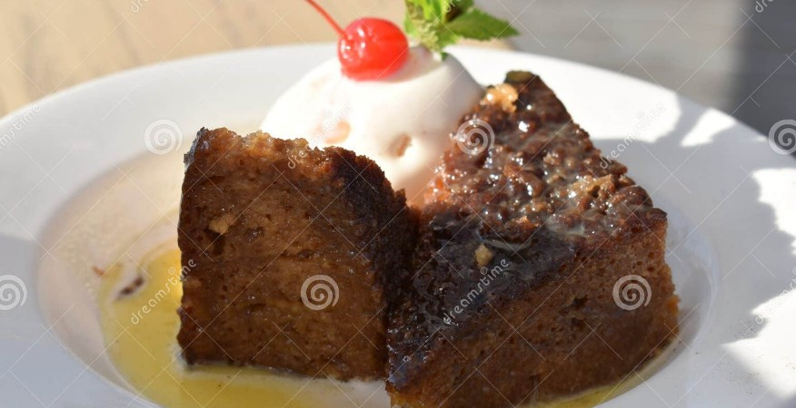

South African Malva Pudding
Description
Malva Pudding is a sweet and sticky dessert of South African origin, featuring a caramelized exterior and a spongy, moist interior, often served with a creamy sauce.
Ingredients
- Sugar
- Eggs
- Apricot jam
- All-purpose flour
- Baking soda
- Salt
- Butter
- Vinegar
- Milk
Steps
- Beat sugar and eggs until fluffy, then blend in apricot jam.
- Sift flour, baking soda, and salt together.
- Melt butter and mix with vinegar and milk.
- Combine all ingredients and pour into a baking dish.
- Bake at 350°F (175°C) until golden brown.
- Pour over a buttery cream sauce before serving.